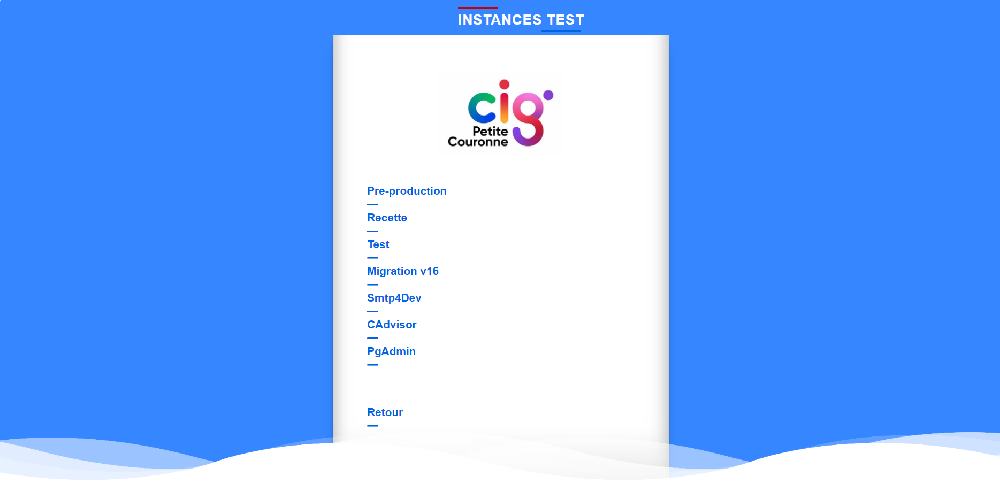

Projet n°2:
Création d'un site web
L'application Proximité partenaire est distribué à d'autres centre de gestion voulant cette application, c'est pourquoi un portail regroupant toutes les instances des différents centre de gestions participant à été crée, pour regrouper tout au meme endroit sans devoir passer par peins de liens différents à chaque fois.
Ce portail entièrement réalisé par mes soins n'est accessible que en interne (il faut avoir une connexion au CIG petite couronne ou alors passer par un VPN).
Celui-ci se présente ainsi:
Nous avons donc une partie pour le CIG petite couronne et une partie pour le GIP qui est une entreprise qui finance cette application et s'occupe de la redistribuer aux centres de gestion intéressée.
La partie du CIG se présente ainsi:

Dans la partie du GIP nous avons un menu déroulant montrant tout les centres de gestions intéressée, cela se présente de cette manière:
Lorsque on sélectionne un centre de gestion, une page de cette manière s'affiche présentant toutes les instances disponibles:
Cette page de regroupement des instances permet donc une navigation plus simple et plus rapide entre les différentes instances lors de bug , ce qui permet une réactivité plus accrue pour les interventions.